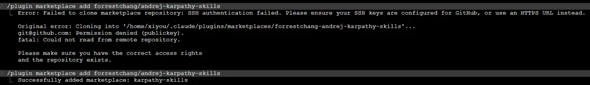
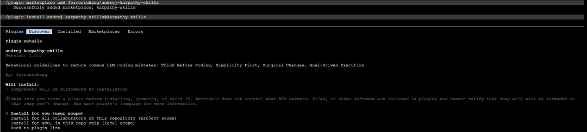
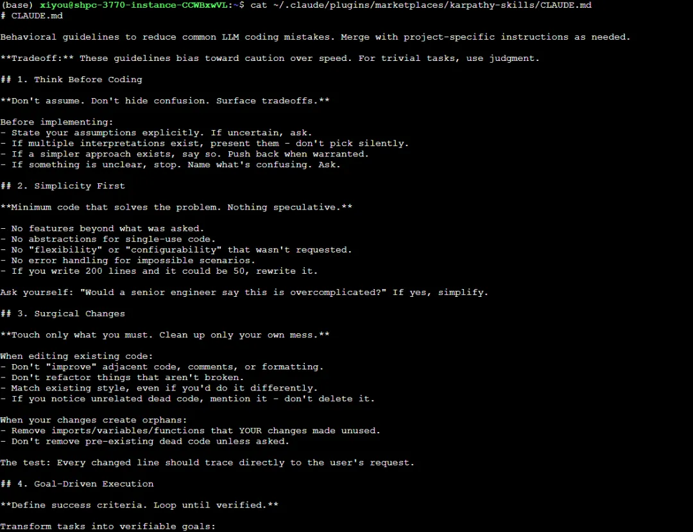
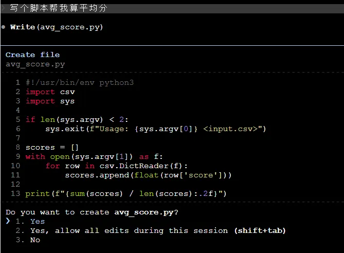
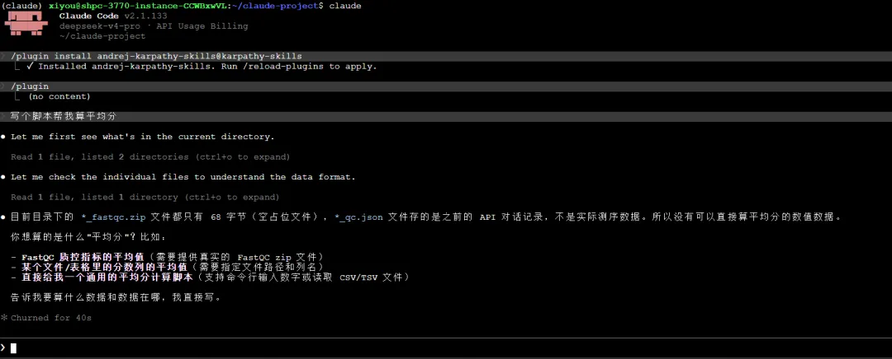

12万stars，65行文字让ClaudeCode更好用
原文：https://mp.weixin.qq.com/s?__biz=MzAwMzIzOTk5OQ==&mid=2247539227&idx=2&sn=e8c468832548b356501de3cba3e73016&chksm=9b3c234bac4baa5dc36786f8e4e3703e32a01bc3cb3d4dbd0426f62025c5a9992f9777d599d4#rd 合集：AI时代，不用就会被淘汰

这是什么？
andrej-karpathy-skills是一个GitHub仓库，它不包含任何代码或模型，核心内容是一个CLAUDE.md配置文件，该文件为Claude Code等AI编程助手提供了一套可执行的行为规范。其发布后短时间内就获得了12万stars，今天带大家一探究竟。
为什么需要它？
作者在长期使用AI编程后发现，当前的AI模型有几个典型问题：
- 盲目假设，不加核实
模型会替你做出错误的假设，然后不加核实地照搬这些假设。它不会处理自身的困惑，不会主动寻求澄清，不会指出需求中的不一致之处，不会提出不同方案的权衡取舍，也不会在应该提出异议的时候提出异议。
- 过度复杂化
模型真的很喜欢把代码和API搞得过于复杂，堆砌抽象层，不清理无用代码。明明100行就能搞定的事情，它却要用1000多行来实现一个臃肿的结构。
- 连带破坏
模型有时仍然会因为不完全理解而更改或删除注释和代码，即使这些改动与当前任务无关，也会产生不必要的副作用。
这些问题归结为一点：模型在执行层面很强，但在判断和约束层面缺乏规范。因此，需要一套明确的规则来约束和引导它的行为。

解决方案：四个行为准则
针对上面提到的这些问题，一个直接有效的办法就是使用这个项目里的CLAUDE.md配置文件。它把作者的观察转化成了四条AI可以直接执行的行为原则：
-
先思考，后编码
-
明确陈述假设，不确定时主动提问
- 遇到歧义时呈现多种可能性
-
困惑时停止并请求澄清
-
简单优先
-
只实现明确要求的功能
- 不添加未要求的抽象、配置、错误处理
-
若200行可简化为50行，则重写
-
精准修改
-
只改动任务直接相关的代码
- 不改动格式、注释、无关代码
-
匹配现有代码风格，不强行统一
-
目标驱动执行
-
将指令转化为可验证的成功标准
- 例如：“修复 bug” → “先写复现bug的测试，再让测试通过”
- 多步任务时列出每步的验证方式

使用方式
方式一：Claude Code插件（推荐）
在Claude Code中依次执行：
-
-
-
- *
-
-
# 添加市场/plugin marketplace add forrestchang/andrej-karpathy-skills
# 安装插件/plugin install andrej-karpathy-skills@karpathy-skills
首次添加市场可能会报错，重试即可

安装后，规则存放于~/.claude/plugins/marketplaces/karpathy-skills/，对所有项目生效

方式二：单项目使用
新项目：
# 下载 CLAUDE.md 文件并保存到当前目录curl -o CLAUDE.md https://raw.githubusercontent.com/forrestchang/andrej-karpathy-skills/main/CLAUDE.md
已有项目（追加）：
# 对已有项目追加一个空行，保持格式整洁echo "" >> CLAUDE.md# 下载并追加新规则curl https://raw.githubusercontent.com/forrestchang/andrej-karpathy-skills/main/CLAUDE.md >> CLAUDE.md
如何知道它是否有效？
这套规则改变的是AI的行为模式，而不是产生一个可以运行测试、判断“通过/不通过”的确定性输出。因此，效果需要通过观察和长期体验来评估。如果看到以下情况，则说明这些指导原则有效：
效果测试
为了直观展示这套规则的作用，我们用同一个简单任务进行测试：
- *
# 启动claude并对话：“写个脚本帮我算平均分”
1️⃣ 未使用规则时
Claude Code没有做任何询问和澄清，直接假设数据来自CSV文件、列名叫score、文件路径通过命令行参数传入，然后直接生成了一段完整的Python脚本

2️⃣ 使用规则后
同样的任务，在添加了andrej-karpathy-skills规则后，先查看当前目录，确认有没有数据文件；发现没有可用数据后，主动列出几种可能的解释；向用户提问澄清：“你想算的是什么平均分？数据在哪？”。它没有盲目生成代码，而是先处理自己的困惑，再寻求澄清。


使用说明
这套规则倾向于谨慎而非速度 。建议在大多数开发场景下启用，比如功能开发、bug修复、需要AI独立完成多步任务、以及对代码质量和可维护性有要求的项目。对于非常琐碎的操作，比如简单的拼写错误修正、显而易见的一行代码改动，可以自行判断是否跳过，并非每次都需要完全严谨。核心原则是：根据任务复杂度灵活把握，复杂任务用足规则，简单任务适度简化。
总结
andrej-karpathy-skills不提供新功能，也不依赖特定模型。它只是将成熟的工程经验写成一份AI能读取的规范，这些经验包括先理解再动手、保持简单、只改必要部分以及用目标驱动执行。如果经常遇到AI输出代码“大致能用但需要反复调整”的情况，可以尝试将这个配置文件引入项目。安装成本极低，效果可量化观察。
西柚云在售算力
我们长期提供GPU、CPU算力，欢迎大家联系后台。访问链接：https://biomamba.xiyoucloud.net/